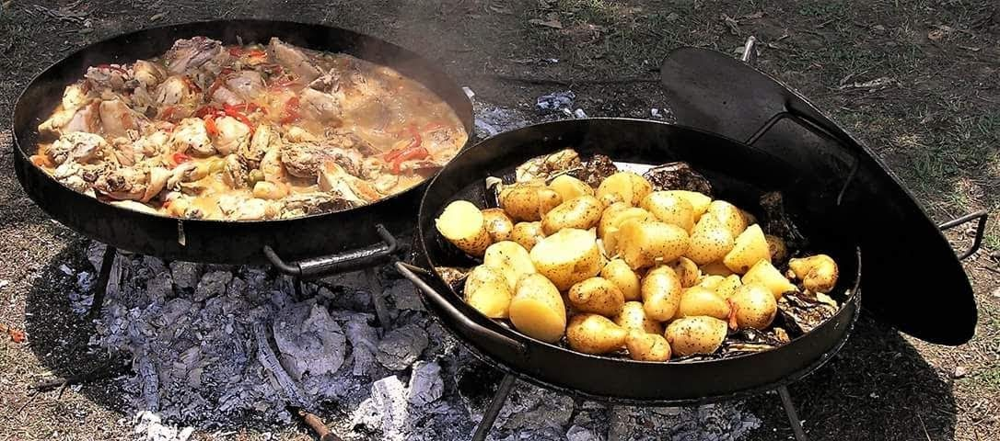
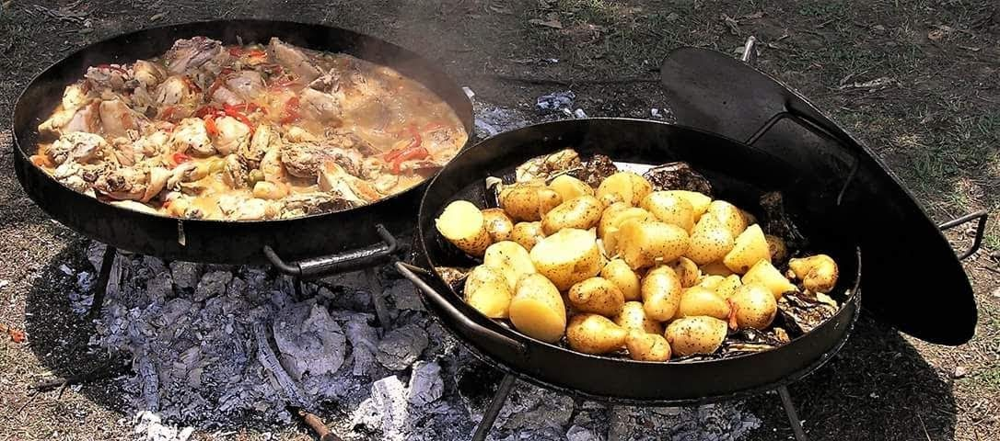

Comidas del Noroeste Argentino
La belleza y riqueza de la tierra del noroeste hacen del maíz la estrella de los productos, base de muchos de los platos típicos de esta región, donde se destacan el locro, las empanadas con sus diferentes características de cada región, humitas, tamales, charquisillo, guaschalocro, rosquetes, empanadillas, quesillos.
 
